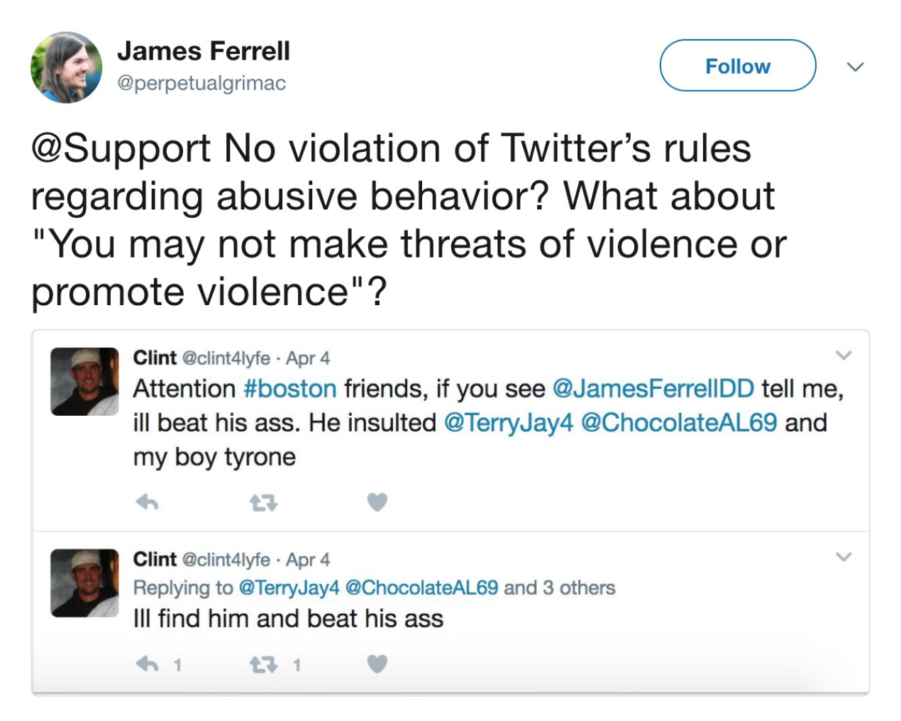
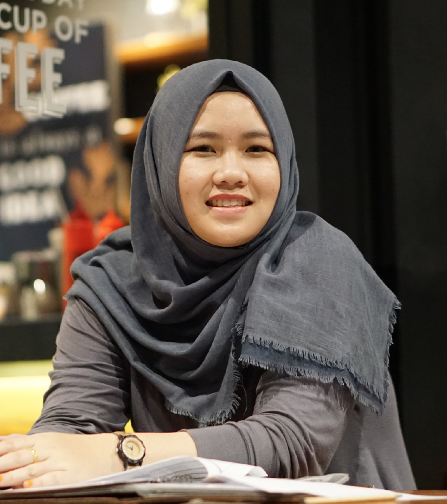

In the Spring, Parsons the New School for Design launched a brand new elective available to graduate students. This experimental elective was a collaborative project that involved six New York City Universities: Cornell Tech, Columbia University, City University of New York, New York University, The New School and Pratt Institute. Through weekly lectures and a couple weekend-long hackathons, this course asked students to work with those from other institutions and develop possible solutions to contemporary issues that plague journalism, technology, and democracy today. View the class website
here.
The Problem
Twitter is a breeding ground for high volumes of harassment that is disproportionately targeted against women, people of color, and trans and nonbinary people. When users report instances of abuse, Twitter handles these claims inconsistently and inefficiently.

Key Statistics
41% of Americans have been personally subjected to harassing behavior online.
18% have been subjected to particularly severe harassment online.
14% say they have been harassed online specifically because of their politics.
Research
Although most people believe harassment is often facilitated by the anonymity that the
internet provides, these experiences can involve acquaintances, friends or even family
members.
One-in-four people who are black say they have been targeted with harassment online because of their
race or ethnicity, as have one-in-ten Hispanics. The share among whites is lower (3%).
Similarly, women are about twice as likely as men to say they have been targeted as a
result of their gender (11% vs. 5%). Men, however, are around twice as likely as women to say
they have experienced harassment online as a result of their political views (19% vs. 10%)
Roughly eight-in-ten Americans (79%) feel that online services have a responsibility to
step in when harassing behavior occurs on their platforms, while just 15% say that these
services should not be held responsible for the behavior and content of its users.
Meanwhile, 64% say online platforms should play a major role in addressing online
harassment, and 35% believe that better policies and tools from these companies are the
most effective way to address online harassment.
User Story

image courtesy of unsplash
Samia is a young muslim woman from Portland, Oregon, just 24 years old. She’s two years out of college, media and twitter literate. She attempting to form a small resistance community in opposition to the strong nazi ties where she lives.
After beginning to gain a small following through her smart, snappy content, she starts facing backlash from both local hate groups, and the larger twitter biosphere. She finds herself in many pointless arguments. These days she finds herself gettingscared when she sees her notifications spike, wondering whether or not she’s being abused. These fears translate into real world actions. As a muslim woman, she already worries about whether or not she’s being stared at because she’s a woman wearing a Hijab, or this additional layer now as a semi-recognizable figure.
Twitter continues to be a useful tool for her so she doesn’t want to leave it (thus letting the haters win), but something’s gotta give. After seeking advice from other organizers who are cis white males, she finds herself at a loss. They told her to just ignore it. For her, these problems can’t just be shrugged off anymore. She looks into third party apps, and finally discovers RescueTimeline. After downloading and inputting her credentials, she’s able to curate her feed so that she doesn’t get into fights with bots, and can better protect herself from hate speech and other harmful threats.
What Does RescueTimeline Do?
RescueTimeline is an iOS/Android plug in that empowers twitter users to take things into their own hands and combat online abuse. It features a content warning function that allows users to input terms (like slurs or other hateful language) into a blacklist, which blocks tweets appearing on the timeline until the user decides to view it. It also has a fraud account-recognition function which tells you the likelihood of a twitter account being a bot.